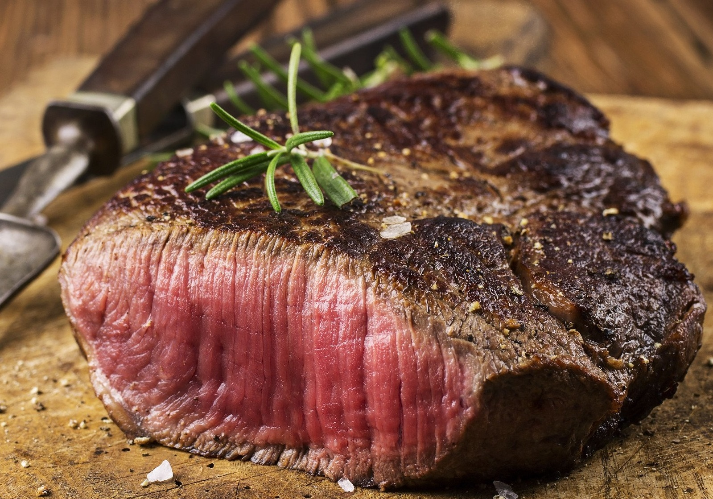

Home
Butter Basted Steak Recipe

Description
This Steak is juciy, tender, and delicious.
The perfect protein for a special occassion.
Ingredients
- 1lb Steak
- Salt and Pepper
- Butter
Steps
- Remove steak from package, pat dry, and place on a plate. Refrigerate, uncovered, for 2 hours before cooking.
- Heat a heavy skillet over medium-high heat until hot. Sprinkle steak thoroughly with salt and pepper. Trim off any extra fat from steak. Place steak in skillet with fattest side down; cook until fat is browned, about 2 minutes. Continue cooking until steak is browned, about 2 minutes.
- Add butter to skillet and cook until butter is browned. Turn steak over and cook, basting with browned butter, for 2 minutes more. Remove from skillet to a plate. Tent with foil, and rest steak for 7 minutes to absorb juice. Serve steak with a pat of butter.